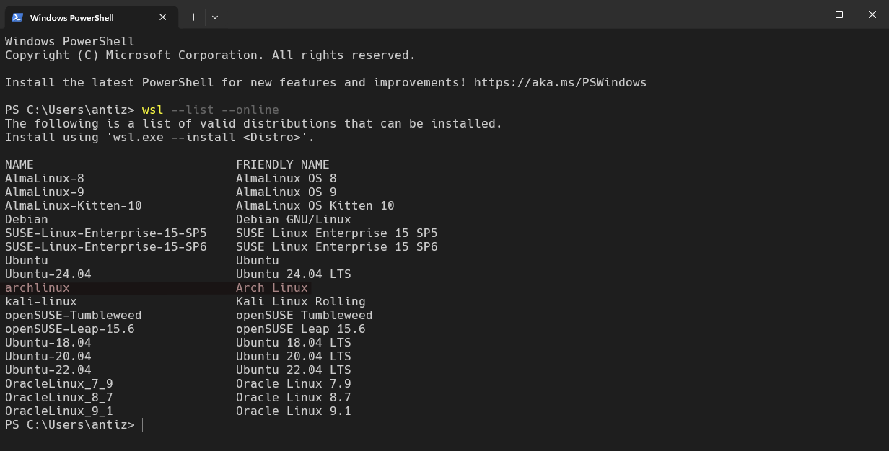

Arch Linux Now Has an Official WSL Image
…and it is officially (re)distributed by Microsoft!
A few months ago, the eventuality of building and providing an official Arch Linux WSL image (Windows Subsystem for Linux - a Microsoft solution allowing to run Linux environments within Windows) was brought to the table within the Arch Linux staff.
This subject was actually explored a few years back but got turned down due to multiple concerns and lack of interest at the time. But WSL have come a long way since then and minds evolved to the point where people were generally willing to reconsider it.
WSL? For what, for who?
Despite being employed as a Linux system engineer, I personally never had the chance to work for a company that allowed me to run Linux on my workstation yet… The usage of Windows was always required by their “internal policy” (whatever that means). It’s unfortunately pretty safe to say that I’m not the only person in that situation.
In such case, WSL acts as a pretty decent and reliable workaround (from my experience), allowing one to run a Linux environment in a fairly transparent way directly from a Windows system; providing a direct access to every Linux tools, hopefully without getting in the way of potential companies’ requirements / restrictions.
More generally speaking, WSL provides an easy and straightforward way to get access to a full Linux environment, allowing to perform Linux development / testing or simply to try & run a Linux distribution directly from Windows; increasing its discoverability & accessibility.
However, the lack of official Arch Linux image for WSL at the time either suggested the use of a different distribution or implied users to rely on unofficial WSL images for Arch Linux, which quality may vary.
As I’m currently relying on WSL for my dayjob, when it appeared that we (Arch Linux) were willing to re-discuss the subject, I naturally expressed my interest and started exploring it.
Writing specifications and submitting an official proposal
Coincidentally, Fedora also started exploring creating WSL images around the same time. Their related change request was a huge inspiration for me to define specifications and act on some unresolved questions. So, thanks Fedora people! 💙
After listing most specifications, I shared them through a mail thread in the Arch-Dev-Public mailing list to collect some thoughts and estimate the overall interest around an Arch Linux WSL image. To my pleasant surprise, this mail thread generated quite some attractions with a majority of positive feedback, both from users and staff!
I therefore proceeded to submit an official proposal for it, including every settled specifications, through a formal RFC (Request For Comments - the mechanism we use at Arch Linux to officially propose and discuss significant changes to our distribution). This RFC was later officially accepted and published.
Implementation and collaboration with Microsoft for official redistribution
With the proposal officially accepted, it was time to start the implementation.
I’m not gonna detail the whole process here but, in a nutshell, we created a dedicated repository on our GitLab instance to which I added every files and scripts needed to build an Arch Linux WSL image from scratch. The build system is partly inspired by the way we build our Docker image, as a WSL image basically consists of a rootFS with additional specific WSL related configurations / files.
I then set up a scheduled GitLab CI within the repo to automatically build an image, run a series of automated tests against it and publicly release it monthly (which goes along the release schedule of our ISO).
We also “re-opened” the Arch Wiki page dedicated to install on WSL, so everyone can share documentation, tips & tricks and troubleshooting steps about this official WSL image (this page was formerly “closed” back we initially claimed that Arch Linux on WSL wasn’t officially supported).
In parallel, I established contact with Microsoft’s WSL team to ask if they were eventually interested to reference our image in the list of WSL’s officially supported Linux distributions, to which they responded very positively!
In collaboration with the Microsoft’s WSL team, we therefore added the Arch Linux WSL image to the official WSL Linux distributions manifest:

This allows users to download and install the latest Arch Linux WSL image from a Windows system with WSL installed in a fully automated way via a single PowerShell command! 🥳🎉
wsl --install archlinux
Final thoughts
I am really happy and proud that we managed to get this through! Not only on the Arch Linux side itself (as the subject raised much more resilience and concerns the first time it was raised a few years back) but also on the Microsoft one, who showed a very helpful and cooperative approach toward our effort!
I hope that this official Arch Linux WSL image will be useful to some people and will be beneficial for Arch Linux’s discoverability and accessibility.
I’d like to take this conclusion as an occasion to thank:
- Fedora for coincidentally studying those intricaties around the same time as I did (which helped a lot)! 😄
- Microsoft for showing interest in including our Arch Linux image to their official
WSLLinux distributions manifest. - klausenbusk for helping in setting up the mirroring of the image.
- heftig for adding the dzn / microsoft experimental driver to our mesa package, allowing to improve the user experience.
- nl6720 for providing precious help and hints with the related documentation on the Arch Wiki.
- mhegreberg for jumping in as an Arch Linux community member, offering help to maintain this WSL image.
- Everyone who shared thoughts & showed interest in the related mail thread & the related RFC as well as everyone that helped along the way regarding the implementation and the documentation in the Wiki.